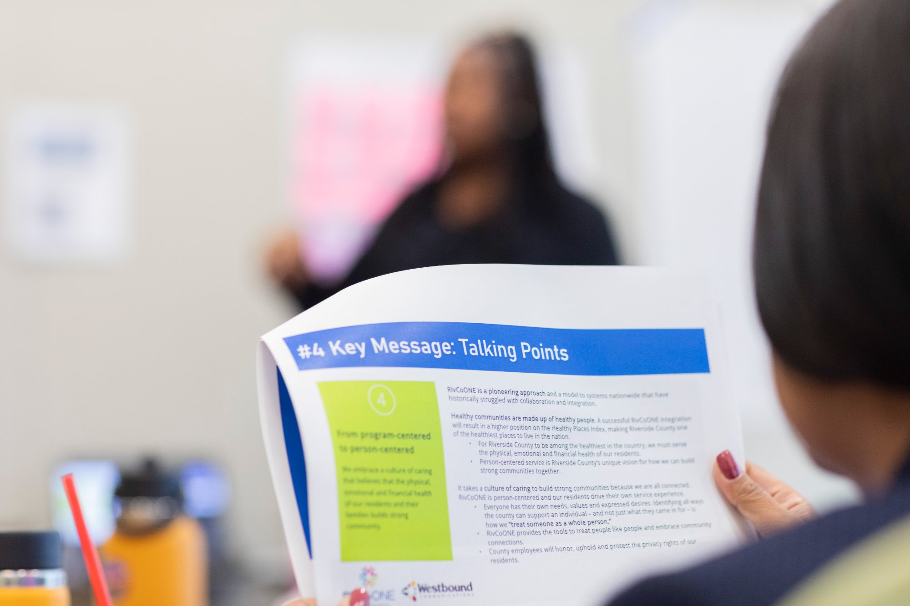

The Equity Lens
Arianne co-created The Equity Lens — a quarterly bilingual internal newsletter launched in direct response to a 2023 staff survey in which 39% of 7,000 respondents cited internal communications on equity as a top priority. The publication was designed as a magazine-quality piece connecting 25,000 county employees to DEIA efforts, employee stories, and departmental equity wins. Each edition was published in both English and Spanish and tied to the County's Emmy award-winning DEIA Stories video series.


RivCoONE Internal Brand Launch
Riverside County is home to 2.4M+ residents and operates 40+ departments. RivCoONE was created to shift the county from program-centered to person-centered service — a fundamental change in how the county does business. Arianne served as a key communications lead, helping develop and roll out the brand internally to 23,500+ employees before a 2026 countywide public launch. This included a key messaging deck, internal communications plan, and Graphic Standards Manual — developed with Westbound Communications.
County Budget Civic Engagement Campaign
During the 2024 budget hearings, residents found the process hard to follow and participation was low — the highest public comment count over three years was only 17. The Executive Office launched an eight-month civic engagement campaign including a bilingual community survey, five in-district budget workshops, a Budget 101 resource guide, and a robust social media strategy. Arianne contributed to communications planning, content creation, news releases, social media, and bilingual materials.
MPOX Emergency Response Communications
As lead communications specialist during the MPOX (Monkeypox) public health emergency, Arianne managed all education, awareness, and promotional materials for Riverside County's response — including the county's first-ever mobile dating-app advertisement campaign designed to reach communities with targeted, inclusive messaging around MPOX prevention and awareness.